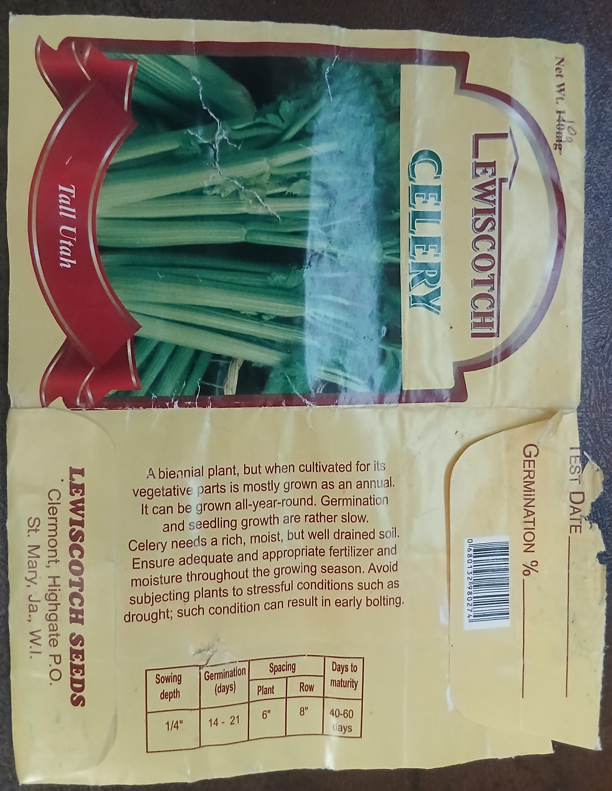
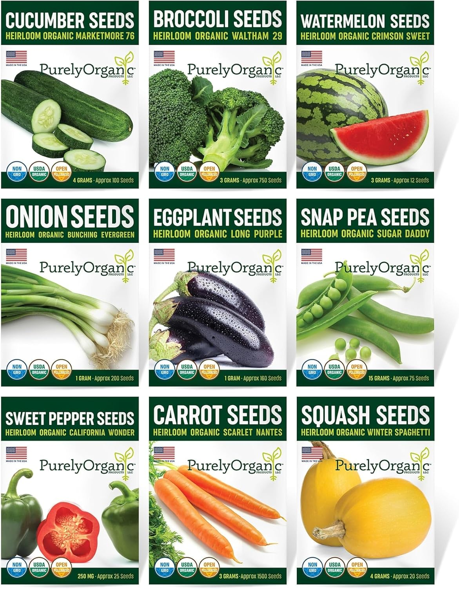
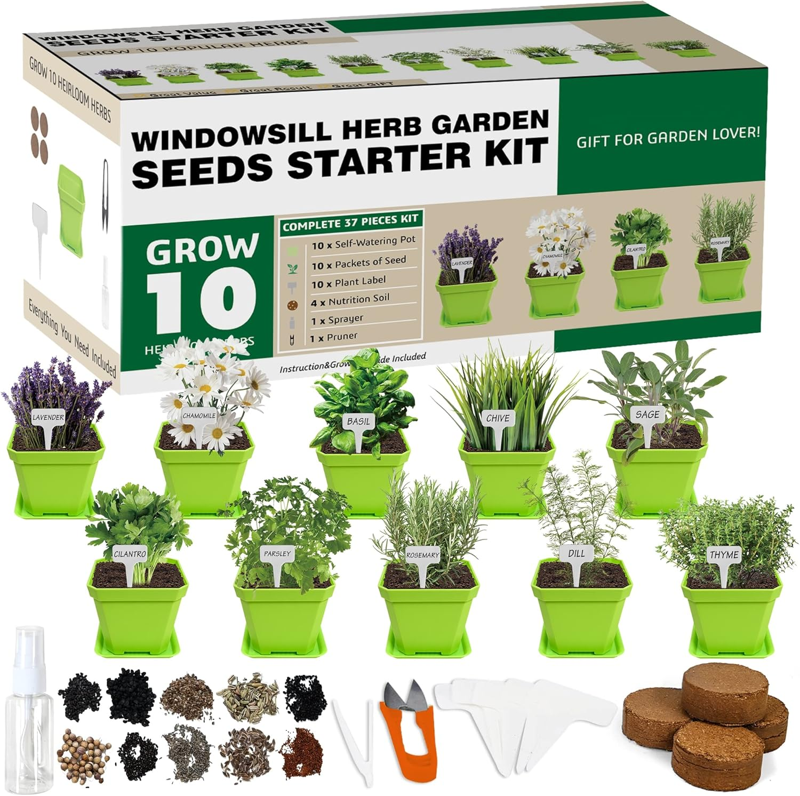
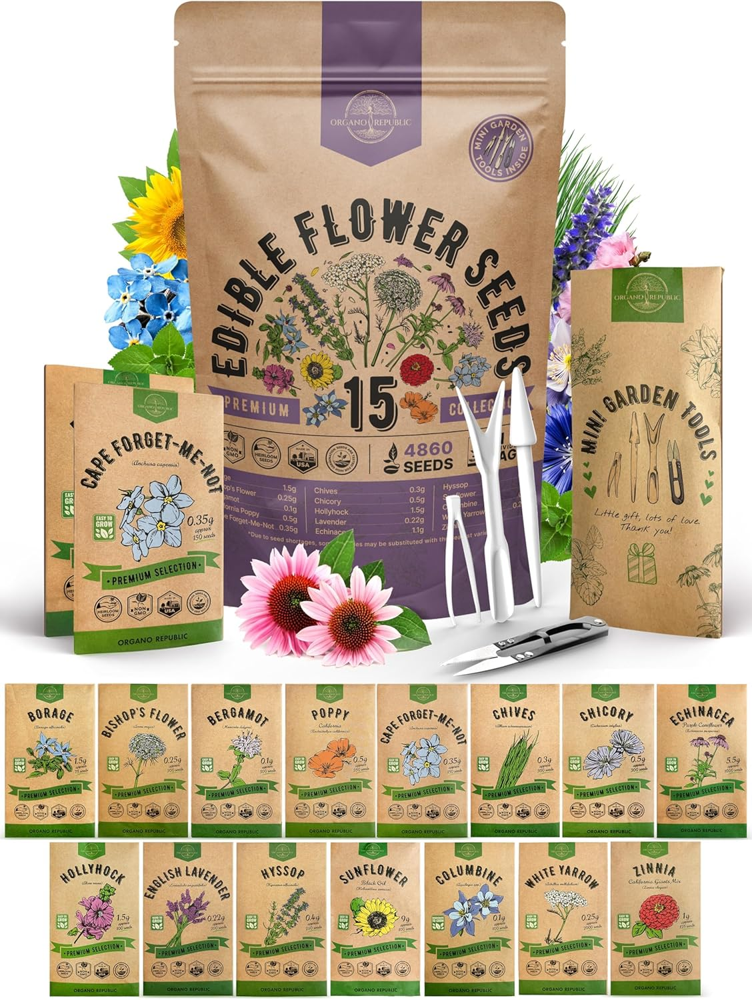
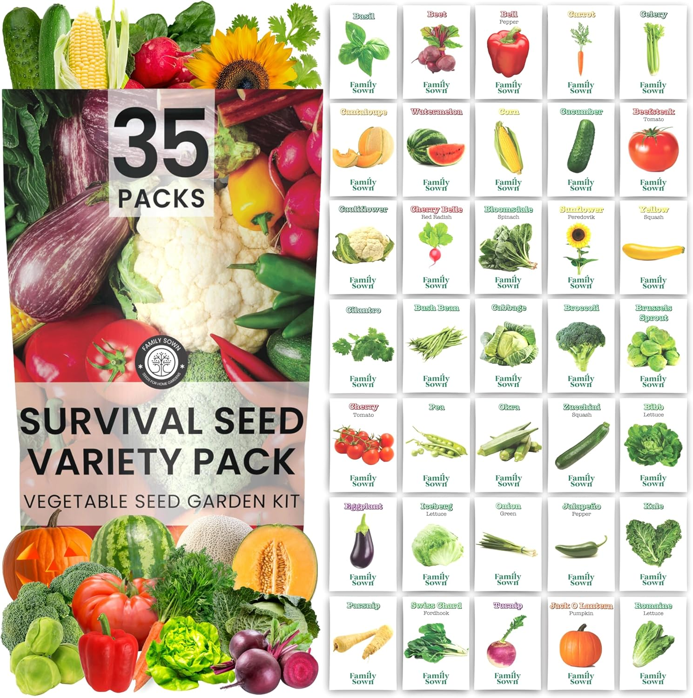
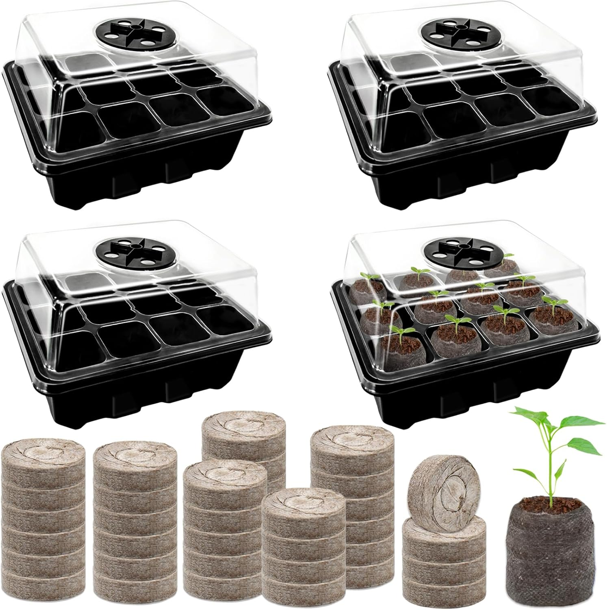

Every gardener has had that moment: you plant your seeds, water them, wait… and nothing happens. Before you give up on gardening, it’s worth taking a closer look at your seed packet and a few basic germination conditions. Often, the problem isn’t you – it’s the seeds or how they were stored and planted.
1. Start With the Seed Packet
Your seed packet is like an instruction manual. It usually tells you:
- Plant name and variety
- Best before / packed for date
- Batch or lot number
- Germination rate (sometimes)
- Planting depth and spacing
- Days to germination

Seed packet with a visible “Sell by” date printed on the back.

Seed packet without any clear test or best by date filled in.
If your seeds are very old or stored in heat and humidity (for example, in a hot kitchen or outdoors), the germination rate can drop quickly – especially in tropical climates.
2. What if There’s No Date on the Packet?
Sometimes you buy seeds and there is no best by date printed at all. That doesn’t automatically mean the seeds are bad, but it does mean you need to be a bit more careful.
Here’s what you can do:
- Check the packet condition. Is it faded, torn, stained or looking “old”? That can be a sign it’s been around a while.
- Do a quick germination test before planting everything (see below).
- Plant a little heavier. If you’re unsure of age, sow a few more seeds than normal to make up for any that won’t germinate.
Simple Paper Towel Germination Test
Before you fill all your pots, test a few seeds this way:
- Moisten a piece of paper towel – damp, not dripping wet.
- Place 5–10 seeds on the towel and fold it over them.
- Put it in a clear plastic bag or clean container and keep it warm.
- Check every day and count how many seeds sprout.
If only 1–2 out of 10 sprout, the germination rate is low and you may need fresh seeds.
3. Watch: Seed Packet Basics (Video)
In this short video, I walk through an actual seed packet and show you where to find the key information before planting.
4. Check the Germination Conditions
Even when your seeds are good, they still need the right conditions to wake up. If one of these is off, your seeds may just sit there.
| What to Check | What Can Go Wrong | How to Fix It |
|---|---|---|
| Water | Soil is too dry or waterlogged | Keep soil consistently moist but not soggy. |
| Depth | Seeds planted too deep | Most small seeds should be barely covered or just pressed in. |
| Light | Some seeds need light to germinate | Follow the seed packet – “surface sow” means don’t bury them. |
| Temperature | Too cold or extremely hot | Most seeds prefer a warm, stable temperature to sprout. |
| Soil / Medium | Heavy garden soil or compacted dirt | Use a light, well-draining seed-starting mix where possible. |
5. Quick Troubleshooting Checklist
Before you throw out your seed packet, ask yourself:
- Did I check the date or test the seeds?
- Were the seeds stored in a cool, dry place?
- Did I follow the planting depth on the packet?
- Is the soil staying evenly moist (not dried out for days)?
- Is the container draining properly?
Sometimes, all you need to do is adjust one of these, and your next batch of seeds will do much better.
Seed Options You Can Try
If you suspect your seeds are old or of poor quality, it may be time to start over with a fresh batch from a reliable source. Here are some seed options and tools you can explore on Amazon – just click on the link and check out these products:

A mix of popular vegetables like cucumber, broccoli, watermelon,
onions, eggplant, snap peas, sweet pepper, carrot and squash – great
for kitchen gardens and container beds.
🔗 Click on the link and check out these products

A complete kit with pots, soil discs and seeds for herbs like basil,
parsley, cilantro, rosemary, thyme and more – perfect for small
spaces, kitchen windowsills and balconies.
🔗 Click on the link and check out these products

A beautiful collection of edible flowers including sunflower, lavender,
zinnia, chives, echinacea, borage and more — perfect for garden beds,
containers and decorative planting.
🔗 Click on the link and check out these products

A huge assorted vegetable seed garden kit with 35 varieties including
corn, cucumber, tomato, cabbage, kale, squash, peas, herbs and more.
Great for home gardens and preparedness.
🔗 Click on the link and check out these products
Essential for keeping track of your seedlings and different seed varieties.
Includes durable labels and a marker for clear, long-lasting writing.
🔗 Click on the link and check out these products

Ideal for germinating seeds faster and more consistently. Includes seed trays,
adjustable humidity domes, and expanding peat pellets for easy transplanting.
🔗 Click on the link and check out these products
Disclosure: As an Amazon Associate I earn from qualifying purchases. #ads